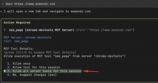
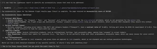
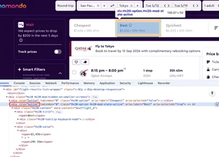
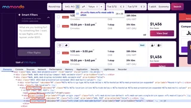
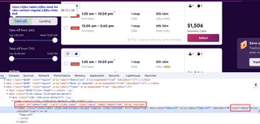
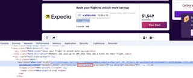
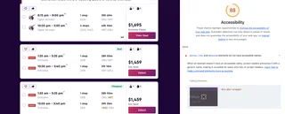
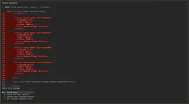

Using Chrome DevTools MCP to debug web accessibility
Chrome DevTools MCP Server enables a direct connection between your browser and AI coding assistants, providing real-time context of the active session and making debugging and fixes more accurate.
In this post, I’ll walk through how to set up the Chrome DevTools MCP Server with the Gemini CLI + Agent Skills, and share my adventures using the tool to debug the accessibility of a travel website, then analyze a poorly structured local file and ask the tool to fix it. 🤠
First things first, what is MCP (Model Context Protocol)?
MCP (Model Context Protocol) is an open-source standard for connecting AI applications to external systems. Using MCP, AI applications like Claude or ChatGPT can connect to data sources (e.g. local files, databases), tools (e.g. search engines, calculators) and workflows (e.g. specialized prompts)—enabling them to access key information and perform tasks. — Model Context Protocol docs
Think of it like giving AI a pair of eyes and hands inside your browser.
Now, with enough context, we can start testing the Chrome DevTools MCP Server capabilities.
This audit uses www.momondo.com as a case study to explore the capabilities of the Chrome DevTools MCP Server for accessibility debugging. I picked Momondo both for its effective flight-search deals that I use regularly and for providing a perfect example of a complex, real-world UI.
The intention is not to evaluate the company or its teams, but to understand how the tool performs in practice.
Installing Chrome DevTools MCP
To get started, you'll need an AI tool on your terminal. Chrome DevTools MCP works with a large range of clients, in this tutorial I'm using gemini-cli.
- Install gemini-cli
npm install -g @google/gemini-cli
- Install the Chrome DevTools MCP server and add it to Gemini's list of MCP servers.
gemini mcp add -s user chrome-devtools npx chrome-devtools-mcp@latest
Testing Chrome DevTools MCP installation
To check if everything is working, run gemini and interact with the MCP
Open https://www.momondo.com
Gemini detects that it needs to run "new_page" from server ChromeDevTools MCP and ask will ask for permissions to run that. Choosing Allow all server tools for this session will save you from constant prompts during your session.

On the first run, you'll be asked to login on your Google Account.
You can then watch Gemini open a Chrome window and start following your commands:
Once the page is open, the MCP should respond with something like: The momondo homepage is now open. Would you like to search for a flight or do anything else?
Now that we’re set up, let’s add some "Agent Skills."
Installing Agent Skills
Agent Skills are packages containing instructions, and optional scripts that extend AI agent capabilities with specialized knowledge and workflows.
We know AI coding agents are powerful but they usually optimize for "done" over "correct", Agent Skills can be very helpful to avoid shortcuts, specially when analyzing code.
In this post we are going to use Addy Osmani Agent Skills, this package include 20 Skills that consolidate workflows, quality gates, and best practices that senior engineers use when building software, including accessibility skills, that will be relevant for this test.
In order to add those skills, you can simply run on your terminal:
gemini skills install https://github.com/addyosmani/agent-skills.git --path skills
To check if the skills were properly installed you can open gemini and run:
/skills list
a11y-debugging should be the first item of the list this command returns.
Debugging accessibility
Now that have all the setup correct, let's take a deeper look on the accessibility features.
Lighthouse accessibility audits
I started by asking the MCP to perform a flight search and run an initial check.
Can you make a search of flights to tokyo and run an accessibility check of the results page?
And it generates an report based on Lighthouse audit:

Click here to see the full Lighthouse audit
✦ The accessibility check for the Momondo flight results page (Tokyo) is complete. The page received an Accessibility score of 83/100.
Key Accessibility Issues Identified:
1. Critical ARIA Misuse:
* Invalid Attributes: The "Cheapest," "Best," and "Quickest" sort buttons incorrectly use the aria-selected attribute, which is not permitted for the button role.
* Invalid Child Elements: The flight origin and destination "listbox" elements contain button roles as direct children, which violates ARIA standards (they should only contain option roles).
2. Serious Contrast Issues:
* Multiple elements, including price labels ("$1,456") and category headers ("Cheapest"), have a contrast ratio of ~2.63:1, falling well below the WCAG AA requirement of 4.5:1. This makes the text difficult to read for users with low vision.
3. Labeling & Naming:
* Accessible Names: Several interactive elements, such as informational tooltips, lack accessible names, making them "unnamed" to screen readers.
* Name Mismatches: Visible text labels for locations (e.g., "Sao Paulo") do not perfectly align with their programmatic accessible names, which can cause issues for voice control users.
4. Role Inconsistencies:
* Radio roles are applied to label elements, and group roles are applied to link elements, which is non-standard and can confuse assistive technologies.
Would you like a more detailed breakdown of any specific section, or should I help with something else?
Asking for fixes
The report was concise, and the initial recommendations seemed reasonable at a glance. I followed up by asking for specific code fixes.
How to fix those issues found? Can you point the exact items to fix?
It returned a list with 6 detailed recommendations:
✦ To fix the accessibility issues found on the Momondo flight results page, you need to address specific ARIA role violations and color contrast failures. Here are the exact items to fix, along with the recommended code changes:
1. Fix ARIA Attribute Misuse (Critical)
The sort buttons ("Cheapest", "Best", "Quickest") use attributes that aren't allowed for their current roles.
* Item: Sort Buttons (div.Hv20-option)
* Current Issue: Uses role="button" with aria-selected.
* The Fix: Use aria-pressed instead of aria-selected for buttons that toggle state.
* Bad: <div role="button" aria-selected="true">Best</div>
* Fixed: <div role="button" aria-pressed="true">Best</div>
2. Fix Invalid Component Structure (Critical)
The location search fields violate the rule that a listbox can only contain option elements.
* Item: Origin/Destination Inputs (div.vvTc)
* Current Issue: The role="listbox" container has a role="button" (the "Add" button) as a direct child.
* The Fix: Move the "Add" button outside the listbox or change the parent role to group.
* Fixed: Change role="listbox" to role="group" or ensure only role="option" elements are direct children.
3. Fix Color Contrast (Serious)
Several key pieces of information are hard to read for users with low vision because the text is too light.
* Items:
1. "Wait" label (div.IzNq-label-wait): Increase contrast of #e02472 on #21033a.
2. Sort labels & prices (span in div.Hv20-title and div.Hv20-value): The color #a79bb0 on white is too light (2.63:1 ratio).
3. Result descriptions (div.NAnQ-description): Also uses #a79bb0.
* The Fix: Change the text color from #a79bb0 to a darker shade like #595959 or darker to reach the 4.5:1 contrast ratio.
4. Fix Missing Accessible Names (Serious)
Screen readers can't identify what some buttons do because they have no text or labels.
* Item: Information Tooltips (div.ftDe-trigger-wrapper and div.qQvr-wrapper)
* Current Issue: No visible text and no aria-label.
* The Fix: Add an aria-label describing the button's purpose.
* Fixed: <div role="button" aria-label="Flight details and amenities info" ...></div>
5. Fix Invalid ARIA Roles
Some elements are assigned roles that aren't valid for their HTML tag.
* Item: Filter Radios (label.c2jKu-label)
* Issue: role="radio" is assigned to a <label> element.
* Fix: Put the role on the <input type="radio"> itself and use the label normally (associated via for and id).
* Item: Price Links (a.eNVa-link)
* Issue: role="group" is assigned to an <a> (anchor) tag.
* Fix: Remove role="group". Anchors should naturally act as link roles.
6. Fix Name Mismatches
* Item: Location Buttons (div.vvTc-item)
* Issue: The visible text "Sao Paulo" is inside an aria-label="Flight origin input Sao Paulo". This can fail for voice users who say "Click Sao Paulo."
* The Fix: Ensure the visible text matches or is at the start of the accessible name.
* Fixed: Use aria-label="Sao Paulo, Flight origin input" so the primary identifier is first.
By addressing these specific elements, you will significantly improve the accessibility score and ensure the page is usable for people relying on screen readers, high contrast, or voice commands.
Recommendations 3, 4, and 6 were spot on, but things got questionable with items 1, 2, and 5. Let's see more details on the next section.
Dealing with non-semantic markup
I would like to start this with the first rule of ARIA use:
If you can use a native HTML element or attribute with the semantics and behavior you require already built in, instead of re-purposing an element and adding an ARIA role, state or property to make it accessible, then do so.
Notice that the implementation suggestions rely a lot on adding or updating ARIA attributes, which is not wrong, but if we take a deeper look on the page markup, we notice that the HTML structure could be improved and that could result on a better accessibility.
Recommendation 1
For recommendation 1 (swapping aria-selected for aria-pressed), we have a <div> playing the role of a <button>.

Instead of changing the ARIA attributes, it would be much simpler and more maintainable to just use a real <button> element. This gives you all the built-in accessibility for free.
Recommendation 2
Recommendation 2 suggested moving the "Add" button out of the listbox or changing the parent role to "group." Let's break it into 2 parts:
Moving the button outside the listbox makes sense as
listboxonly acceptsoptionorgroupas child roles. The first part of the recommendation is ok.It also recommends to use the group pattern instead of listbox for this component, however,
listboxis far more appropriate here than a generic group. The second part is not so accurate.
There is also a <div> acting as the container for the listbox trigger, implemented as a <div> with role="button" that opens the listbox on click. This wasn’t mentioned in the audit, even though it has an invalid markup.
A possible solution would be to use a native <button> element for the trigger and avoid coupling it with the listbox structure. Not calling this out makes the assessment feel incomplete.

Recommendation 5
On recommendation 5 we also have 2 fixes, let's start with the first: "Put the role on the <input type="radio"> itself and use the label normally (associated via for and id)".
This component is acts as a tab that switches the available options depending on the selection of "take-off" or "landing", tabs pattern would work here, but I don't think it's an anti pattern using radio buttons implementation as it was made.
It uses a custom radio button element, the suggested fix makes sense, but we don't need to add role="radio" to the <input type="radio">, just removing the role="radio" from label is enough. Not a very accurate recommendation, again.

The second recommendation is about removing role="group" from a link, which makes total sense.

Seeing these suggestions, I pushed back and asked if patching ARIA was really the best approach.
given that html semantics are important to ensure accessibility. Does this page have a valid markup? Are the provided approaches the best solutions to fix those issues? Are there issues that can be fixed by improving the page semantics?
This prompted a much more insightful response suggesting fixing the markup over updating/adding attributes ARIA.
Click here to see the full response
✦ The current markup on the Momondo flight results page relies heavily on <div> soup with ARIA roles rather than native HTML elements. While ARIA can make a <div> act like a button, it is a "polyfill" for poor semantics and often leads to the exact bugs I found in the audit.
Here is an evaluation of the page's structural integrity and how improving semantics would provide better, more resilient fixes than just patching ARIA attributes.
1. Is the current markup "Valid"?
Technically No. The audit highlights several spec violations:
* Structural Mismatch: A role="listbox" containing a role="button" is a direct violation of the ARIA structural model. A listbox is a managed container that should only contain option roles.
* Role Abuse: Placing role="radio" on a <label> element is semantically incorrect. Labels are meant to describe inputs, not be the inputs.
2. Are the previous fixes the "Best" solutions?
The previous fixes were "surgical patches" (fixing the ARIA to match the div structure). However, the best solution is almost always to replace the div with the correct native HTML element.
Native elements have "built-in" accessibility that doesn't break when a developer forgets an attribute.
3. Issues Fixed by Improving Semantics
By shifting from "ARIA-on-DIVs" to "Semantic HTML," you fix multiple issues simultaneously:
A. The Sort Buttons (Cheapest/Best/Quickest)
* Current: <div role="button" aria-selected="true">
* Better Semantic Fix: Use a <button> or a Radio Group.
* Why: If these are mutualy exclusive options, they should be <input type="radio"> elements styled to look like buttons.
* Result: You no longer need aria-selected or aria-pressed. Screen readers will automatically announce "Checked" or "Unchecked," and keyboard navigation (arrow keys) is handled by the browser for free.
B. The Filter Radios (Take-off/Landing)
* Current: <label role="radio">
* Better Semantic Fix: Use standard <input type="radio"> with an associated <label>.
* Why: A native radio button handles its own checked state, focus management, and grouping.
* Result: Fixes the "ARIA role radio is not allowed for given element" error and ensures the state is correctly communicated without manual aria-checked updates.
C. The Location Inputs (Sao Paulo/Tokyo)
* Current: div role="listbox" containing div role="button"
* Better Semantic Fix: Use a <datalist> or a Combobox pattern.
* Why: The "Add" button is currently trapped inside a container that tells screen readers "everything in here is a list option."
* Result: Moving to a proper combobox structure separates the input, the list of suggestions, and the action buttons, resolving the structural violation.
D. The "Unnamed" Tooltips
* Current: <div role="button"> with an icon.
* Better Semantic Fix: Use a <button> with visually hidden text.
* Why: Instead of an aria-label (which can sometimes be ignored or misread), putting a <span> with a "visually-hidden" CSS class inside a real <button> tag is the gold standard.
* Result: Fixes the "Buttons do not have an accessible name" error and ensures the button is naturally focusable in the tab order.
Summary: The "Semantics First" Rule
The most important rule in web accessibility is: "The best ARIA is no ARIA at all."
Conclusion: The current page is "over-engineered" with ARIA to compensate for a lack of semantic HTML. Replacing the interactive <div> elements with their native counterparts would resolve about 80% of the failed audits automatically.
It got confused with the buttons and divs soup, but overall, the debugging was better than browser Lighthouse, which scored this page at 88 and only complained about icon buttons without labels.

Keyboard testing
I also asked the MCP to perform a manual keyboard test, which revealed critical issues that automated audits often miss such as non-functional controls, unreachable content and inefficient tab order.
Is it possible to run a proper keyboard test and identy issues?
Click here to see the keyboard audit
✦ I've identified that the "Show more results" button is reachable with "Tab," which is a good sign for keyboard accessibility. I'll now summarize my findings from the keyboard test.
Additional Keyboard Accessibility Issues Found:
1. Non-Functional Controls (Critical):
* Filter Switches (INPUT role="switch"): These elements do not toggle when pressing "Space" or "Enter." A keyboard user is effectively locked out of using these filters.
2. Unreachable Content (Serious):
* Flight Result Cards: The cards themselves have tabindex="-1". While the "Select" button inside is reachable, the card structure (which often contains click-to-expand details) is not natively focusable.
3. Inefficient Tab Order:
* The "Location" fields (Sao Paulo, Tokyo) require multiple tab presses to get past (Container -> Option -> Remove -> Add). This makes navigating the header very tedious for power users.
4. Inconsistent Focus Indicators:
* While focus moves between elements, some div role="button" elements lack a clearly visible focus ring in their default state, making it hard to know exactly where the focus is without a screen reader.
5. Native Element Abuse:
* The "Show more results" button is a <div> with role="button" and tabindex="0". While it works, using a native <button> would be more robust as it handles "Enter" and "Space" activation automatically.
Would you like me to focus on fixing one of these specific keyboard interactions?
I noticed it didn't interact with many components on the page, so I asked it to test more components, such as the date picker and the airline filters, and it returned:
Click here to see the components audit
✦ I've conducted extensive accessibility testing on the flight results page, focusing on keyboard navigation and semantic markup. Here's a summary of my findings:
1. Date Picker Accessibility (Critical)
* Reachability Issues: The main "Departure date" and "Return date" buttons have tabindex="-1", which prevents them from being reached via standard keyboard navigation. While the dates themselves are reachable, the "Date arrows" (increment/decrement buttons) are also inaccessible.
* Interaction Failure: Even when focusing the date div and pressing "Enter," the calendar fails to open, effectively locking out keyboard users from modifying their travel dates.
2. Airline Filters Accessibility (Serious)
* Non-Standard Markup: The airline checkboxes and filter controls are implemented as <div> elements with role="button" or tabindex="0", rather than native <input type="checkbox"> elements.
* Functional Barrier: The airline checkboxes fail to toggle when the "Space" or "Enter" keys are pressed, preventing keyboard users from filtering by airline.
3. Price Alert Modal (UX Issue)
* Trap & Trigger: Pressing "Enter" on a results page can trigger the "Price Alert" modal unexpectedly. Once open, the modal's "Close" button is difficult to reach via the keyboard, and the "Escape" key doesn't reliably close it, creating a "keyboard trap."
4. Overall Markup Observations
* "DIV Soup": The page relies heavily on generic <div> elements with ARIA roles and manual tabindex management, which is more prone to bugs and inconsistent behavior than using native HTML elements.
* Missing Semantic Cues: The lack of native form elements (buttons, checkboxes, radios) makes the page less intuitive for assistive technology and more difficult to navigate for keyboard-only users.
Recommended Fixes (Prioritized):
1. Replace <div> buttons/checkboxes with native <button> and <input type="checkbox"> to restore standard keyboard functionality and ARIA compatibility.
2. Ensure all interactive elements are in the natural tab order (removing tabindex="-1" from primary controls).
3. Implement proper "Escape" key handling for modals and ensure they are reachable and closable via the keyboard.
Would you like me to focus on fixing a specific component, or is there another part of the page you'd like me to audit?
This part of the audit was insightful and highlighted the tool's real value as a debugging "sidekick."
Running Chrome DevTools MCP locally
Finally, I decided to test its ability to fix code directly. I created a purposefully broken HTML file and asked it to fix the accessibility issues locally.
What change would you make to fix the accessibility of the flight_search.html file? You can edit the file locally

It updated the file with fixes. Download the fixed file.
The agent refactored the file, replacing generic <div> tags with semantic elements like <header>, <main>, and <button>. It also fixed contrast issues and added proper aria-labels.
Although my file was very simple and had obvious accessibility improvements, I think the fixes suggested were reliable.
Final thoughts
Chrome DevTools MCP Server + Gemini CLI + Agent Skills were useful for spotting odd or problematic accessibility cases on the page. It’s particularly good at identifying keyboard navigation failures that static analysis misses.
However, the quality of its fix suggestions is still inconsistent. In the case of the buttons, for example, it recommended adding ARIA attributes, which is not incorrect, but it wasn’t appropriate for that page, where the real issue was poor semantics. Despite having browser context, it wasn’t able to fully understand some custom components, such as the listbox and the tabs. This led to accessibility suggestions that weren’t entirely wrong, but could have been resolved with simpler markup.
This test aligns with recent research from Embrace, showing that while developers are comfortable using AI for building, they are still hesitant to fully trust its explanations for why things are broken.
One open question is whether plugin a more code-focused agent, such as Claude on Chrome DevTools MCP, would produce more robust results in this kind of analysis. This is something worth exploring further to understand how different AI tools perform in accessibility and debugging workflows.
Is it ready to replace a manual audit? Not quite. Is it a good tool for spotting issues and facilitate keyboard testing? Absolutely! The tool is more effective as an exploratory and debugging aid than as a reliable source of solutions. It can guide your attention, but it still requires a critical eye to interpret and validate its recommendations, even so, I see a lot of potential and I'm curious to see how this evolves.
I intend to continue using these tools in future case studies and accessibility audits. I recommend you do the same, as the Chrome DevTools MCP receives frequent updates and AI agents continue to advance.